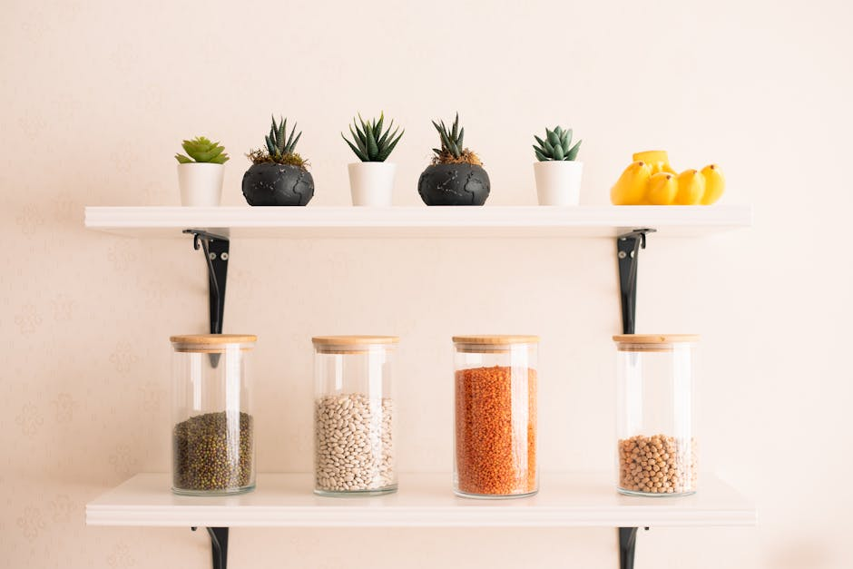
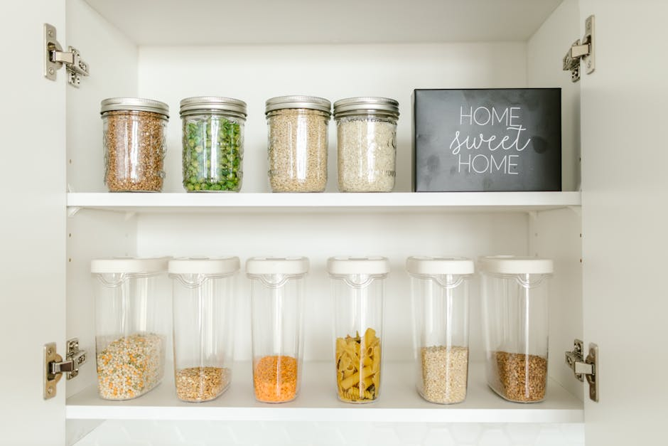
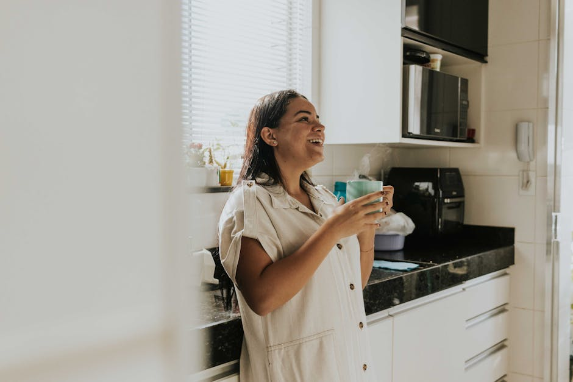

This post contains affiliate links, which means I may earn a small commission if you purchase through my links — at no extra cost to you. I only recommend things I genuinely use and love.
My kitchen used to make me anxious. Not in a dramatic way — just that low-grade, background hum of this is a mess and I don't know where anything lives. I'd declutter, feel great for four days, then watch it collapse back into chaos. Turns out, the tidying wasn't the problem. The storage was.
Once I stopped trying to organize around bad systems and started replacing those systems entirely, everything shifted. Here's what actually made the difference.

Why Most Kitchen Clutter Isn't Actually a Clutter Problem
Here's the thing nobody tells you when you're buying your fourth set of matching bins: organization fails when the system fights how you actually live. If you have to remove three things to get to the one thing you use every morning, you will never — not once — put those three things back correctly. You'll just stack them somewhere nearby and feel vaguely guilty about it forever.
Real kitchen storage has to do two things: make the thing you need easy to grab, and make it just as easy to put back. That's it. When I started evaluating every organizer against that standard, my list of "worth it" products got a lot shorter — and a lot more useful.
The Before: What My Kitchen Actually Looked Like
I want to be honest here because a lot of "organization" content skips this part. Before I got serious about kitchen storage, I had:
- A junk drawer that had basically become a junk dimension
- Spices shoved three-deep in a cabinet I had to crouch to see into
- Tupperware lids that existed in a state of quantum uncertainty — maybe in the cabinet, maybe not
- A pantry where things expired because I genuinely forgot they were in there
- Cutting boards that leaned against each other at a 40-degree angle and fell every single time
Sound familiar? I thought so. The fix wasn't a full kitchen renovation or a minimalist lifestyle overhaul. It was about a dozen targeted products, most of them under $30.
The Organizers That Actually Earn Their Spot
Turntables (Lazy Susans) — The Single Biggest Bang for Your Buck
I resisted these for years because they felt like something my grandmother had. I was wrong. A turntable in a deep cabinet corner means you can actually see and reach everything in one spin. I use them in my pantry for oils and vinegars, in my fridge for condiments, and inside my spice cabinet. The two-tier version is especially good — you get vertical visibility without losing any real estate.
What to look for: a non-slip base, a lip around the edge so things don't fly off, and a diameter that fits your shelf without wasted space on the sides. Measure before you buy. Seriously.
Drawer Dividers — Not Glamorous, Completely Life-Changing
Expandable drawer dividers are the most boring product on this list and the one I'd buy again without a second of hesitation. My utensil drawer used to be a pile. Now everything has a lane. My sous chef (my husband, who will not be taking questions) can actually find the peeler without asking me where it is. That alone was worth the $18.
The key is getting adjustable ones that expand to fit your drawer exactly — fixed-size dividers almost never quite fit and they shift around constantly.
Stackable Pantry Bins with Labels
Pantry organization was the transformation that made me actually want to open my pantry. I used clear, stackable bins grouped by category — baking supplies, snacks, pasta and grains, canned goods — and suddenly I could see everything at a glance. No more buying a second can of chickpeas because I forgot I had three already.
The labeling matters more than it sounds. You don't need a fancy label maker (though I won't stop you). Even masking tape and a Sharpie works. The label is a signal to your brain — and to everyone else in the house — about where things live and where they return to.

A Proper Lid Organizer — For Your Sanity
If you have a cabinet full of food storage containers, you know the particular chaos of lids. They do not stack. They do not cooperate. They slide and scatter and somehow there are always three lids for containers you no longer own. A vertical lid organizer — the kind that holds lids upright like records in a crate — completely solves this. It takes up about four inches of cabinet space and gives you back your entire will to cook at home.
Over-the-Door Organizers — Reclaiming Dead Space
The inside of a pantry door is basically free real estate that most of us ignore. An over-the-door organizer with adjustable baskets or pockets can hold spices, foil and parchment rolls, snack bags, or cleaning supplies — whatever keeps cluttering your actual shelves. I moved all my baking spices to the inside of the pantry door and it freed up an entire cabinet shelf. That shelf is now home to my cookbook collection, which makes me unreasonably happy every time I see it.
Tiered Shelf Risers for Cabinets
This one is specifically for the cabinet where canned goods go to hide behind each other. A two-step riser lifts the back row so you can see labels from the front. It's the same principle as stadium seating, applied to your chicken broth. I know it sounds obvious but I genuinely did not think to do this until last year and I am still a little mad about all the expired soup I've thrown away over the past decade.
Under-Shelf Baskets — The Underdog of Kitchen Storage
These clip-on wire baskets hang from an existing shelf to create a second layer of storage underneath it. I use them in my pantry for snack bars and in my cabinet for cleaning sponges. They take about 30 seconds to install, cost almost nothing, and make use of that empty space between your shelf and the items sitting on it. Wildly underrated.
What I'd Tell You If You're Starting from Scratch
Don't buy everything at once. I know that's counterintuitive when you're in full declutter mode and you want to fix it all right now, but you'll make better choices if you spend a week noticing exactly where your kitchen breaks down before you spend money on solutions. Take note of the three most frustrating moments in your kitchen this week — the thing you have to dig for, the cabinet you avoid opening, the counter that always gets piled — and solve those first.
Also: measure your shelves, drawers, and cabinets before buying anything. I cannot stress this enough. Organizers that don't fit your space don't get used, and then you've just created a new pile on the floor.
One honest caveat I'll give you: no organizational system survives contact with a household that hasn't agreed to it. If you live with other people, take 10 minutes to show them where things live now. You don't need a meeting about it — just say "hey, spices are here now, lids go in this thing." That conversation does more for maintaining your system than any bin or label ever will.

Where I'd Start If I Were You
If I had to pick just three things to buy first, it would be: a turntable for the cabinet or pantry shelf that bothers you most, a drawer divider for your messiest drawer, and a pantry bin set for whatever category keeps ending up all over the place. Those three alone will make your kitchen feel like a different room.
I've linked all my favorite kitchen organizers — the exact ones I use and have replaced zero times because they've held up — in one place so you're not hunting around. If you're ready to actually fix the chaos, shop my kitchen organizer picks here.
Your future self — the one who opens the pantry and actually feels calm — will be glad you did.
Got a specific kitchen storage problem that's driving you crazy? Drop it in the comments. I've probably tried to solve the exact same one and I'm happy to tell you what worked and what was a waste of money.